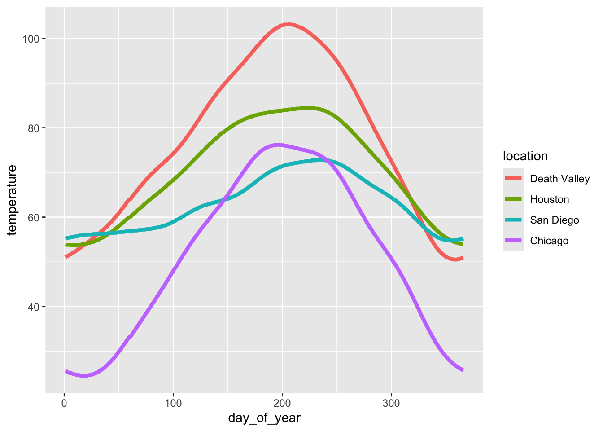
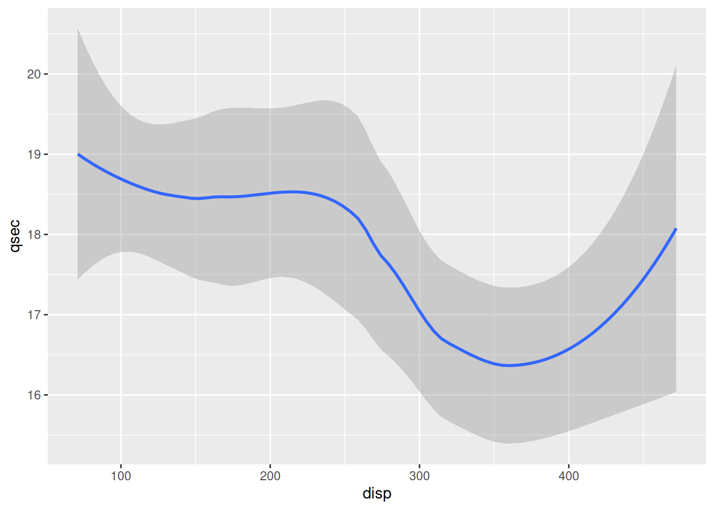

```{r}
#| eval: false
#| warning: false
library(tidyverse)
table_01 <- read_csv("../instructional_dataset/data/01_participant_metadata_UKZN_workshop_2023.csv")
table_02 <- read_csv("../instructional_dataset/data/02_visit_clinical_measurements_UKZN_workshop_2023.csv")
```Exercise 2.1 : Data wrangling and simple manipulations
In this worksheet, we will discuss how to perform basic data manipulations, such as filtering data rows that meet certain conditions, choosing data columns, and arranging data in ascending or descending order.
We will be using the R package, tidyverse for the data manipulation functions %>%, filter(), select(), arrange(), count(), and mutate().
The pipe (%>%, read: “and then”)
When writing complex data analysis pipelines, we frequently use the pipe operator %>% to move data from one analysis step to the next. The pipe is pronounced “and then”, and it takes the data on its left and uses it as the first argument for the function on its right.
For example, to see the first few lines of a dataset, we often write head(data). Instead, we can write data %>% head().
Try this yourself. Write code that displays the first few lines of table_01, using %>% and head():
table_01 ___ head()Choosing data rows
The function filter() allows you to find rows in a dataset that meet one or more specific conditions. The syntax is data %>% filter(condition), where condition is a logical condition. For example, filter(x > 5) would pick all rows for which the value in column x is greater than 5.
Below, write code to pick all measurements from the placebo arm in table_02 :
table_02 %>%
filter(___)Filtering for multiple conditions
You can also state multiple conditions, separated by a comma. For example, filter(x > 5, y < 2) would pick all rows for which the value in the column x is greater than 5 and the value in the column y is less than 2. Note that the conditions are combined via logical and, both need to be satisfied for the row to be picked.
To try this out, pick all measurements at baseline for the placebo arm in table_02 :
table_02 %>%
filter(time_point == ___, arm == ___)Choosing data columns
The function select() allows you to pick specific data columns by name. This is frequently useful when a dataset has many more columns than we are interested in at the time. For example, if we are only interested in the participants’ education, and sex, we could select these three columns:
table_01 %>%
select(education, sex)# A tibble: 44 × 2
education sex
<chr> <lgl>
1 grade 10-12, matriculated FALSE
2 grade 10-12, matriculated FALSE
3 post-secondary FALSE
4 grade 10-12, not matriculated FALSE
5 grade 10-12, matriculated FALSE
6 post-secondary FALSE
7 grade 10-12, not matriculated FALSE
8 grade 10-12, not matriculated FALSE
9 grade 10-12, not matriculated FALSE
10 less than grade 9 FALSE
# ℹ 34 more rowsTry this yourself, picking the columns representing the participant age (age), and then study arm (arm).
table_01 %>%
select(___)Choosing columns for removal
Another situation that arises frequently is one where we want to remove specific columns. We can also do this with select(), but now write select(-column) to remove one or more columns.
Try this. Remove the column smoker.
table_01 %>%
select(___)And now remove both smoker and education.
table_01 %>%
select(-___, -___)Sorting data
The function arrange() allows you to sort data by one or more columns. For example, data %>% arrange(x) would sort the data by increasing values of x, and data %>% arrange(x, y) would sort the data first by x and then, for ties in x, by y.
Sort the participants by age:
table_01 %>%
arrange(___)To arrange data in descending order, enclose the data column in desc(). For example, data %>% arrange(desc(x)) would sort the data by decreasing values of x. (desc stands for “descending”.)
Counting
We frequently want to count how many times a particular value or combination of values occurs in a dataset. We do this using the count() function. For example, the following code counts how many participants there are in each study arm in table_01.
table_01 %>%
count(arm)# A tibble: 2 × 2
arm n
<chr> <int>
1 placebo 23
2 treatment 21Now try this yourself. Count how many smokers and non smokers there are.
table_01 %>%
count(___)We can also perform more fine-grained counts, by providing the count() function with more than one column name. See if you can count how many smokers and non smokers the dataset contains for each treatment arm
table_01 %>%
count(___, smoker)Now count how many participants are in each study arm for each education level in the dataset
table_01 %>%
count(___, arm)Chaining analysis steps into pipelines
We can chain multiple analysis steps into a pipeline by continuing to add “and then” statements. For example, data %>% count(...) %>% arrange(...) would first count and then sort the data.
Try this out by counting the number of participants in each study arm and then sorting by the number of participants
table_01 %>%
count(___) %>%
arrange(___)Exercise 2.2 : Aesthetics using ggplot
For this exercise, we will be using the instructional dataset (path to dataset)
In this worksheet, we will work on ggplot and the mapping of data values onto aesthetics.
library(tidyverse) # load the tidyverse library
# we want to use the data in the visit_clinical_measurements file
clinical_measurements <- read_csv(path to dataset) # read in your data
#then show the first few rows
head(clinical_measurements)Basic geom examples
Remember: we call the ggplot() function with a dataset and an aesthetic mapping (created with aes()), and then we add a geom, such as geom_line() to draw lines or geom_point() to draw points.
Try this for yourself. Map the column ph onto the x axis and the column crp_blood onto the y axis, and use geom_line() to display the data.
Whenever you see ___ in the code below, that means you should swap it in with your own code.
ggplot(clinical_measurements, aes(x = ___, y = ___)) +
___()Try again. Now use geom_point() instead of geom_line().
ggplot(clinical_measurements, aes(x = ___, y = ___)) +
___()And now swap which column you map to x and which to y.
ggplot(clinical_measurements, aes(x = ___, y = ___)) +
___()More complex geoms
You can use other geoms to make different types of plots. For example, geom_boxplot() will make boxplots. For boxplots, we frequently want categorical data on the x or y axis. For example, we might want a separate boxplot for each month. Try this out. Put nugent_score on the x axis, ph on the y axis, and use geom_boxplot().
ggplot(clinical_measurements, aes(x = ___, y = ___)) +
___()Now try swapping the x and y axis geom_jitter()
ggplot(clinical_measurements, aes(x = ___, y = ___)) +
___()Now try swapping the x and y axis
ggplot(clinical_measurements, aes(x = ___, y = ___)) +
___()Adding color
Try again with geom_jitter(), this time using ph as the location along the y axis and arm for the color. Remember to check the ggplot cheat sheet, or type ?geom_jitter() in the console to and look at the “Aesthetics” section if you get stuck.
ggplot(clinical_measurements, aes(x = ___, y = ___)) +
___()(Hint: Try adding size = 3 as a parameter to the geom_jitter() to create larger points.)
Exercise 2.3: Table manipulations
In this exercise, we will work with basic data manipulations, grouping and summarizing, making data tables wider or longer, and joining data tables.
We will be using the R package, tidyverse for the data manipulation functions %>%, group_by(), summarize(), pivot_wider(), pivot_longer(), and join functions such as left_join()
Paste the following into the top code chunk of your qmd file.
library(tidyverse)
table_01 <- read_csv("01_participant_metadata_UKZN_workshop_2023.csv")
table_02 <- read_csv("02_visit_clinical_measurements_UKZN_workshop_2023.csv")Analyzing subsets
Group the table_01 dataset by education_level and smoker.
table_01 %>%
___ %>%
print()Answer for yourself How many distinct groups did this produce?
Now undo the previous grouping.
```{r}
# build all the code for this exercise
```Also verify what the output looks like when you omit the print() function at the end.
Performing summaries
Once we have set up a grouping for a data table, we can then calculate summary data with the summarize() function. This function works similarly to mutate(), in that we provide it with statements of the form <new column name> = <computation>, where <new column name> stands for the name of the new column that is being created and <computation> stands for the computation that is used to generate the values in the new column.
As an example, using table_02 we want to calculate the median ph of participants, by arm, we could write summarise(median_ph = median(ph)), and this would create a new column called median_ph
Try this out. First group by arm and then make the new column:
table_02 %>%
group_by(____) %>%
summarise(___)Now see what it looks like if you instead group by timepoint
table_02 %>%
group_by(____) %>%
summarise(___)Now try grouping by both timepoint and arm
table_02 %>%
group_by(__, __) %>%
summarise(___)We can perform multiple summaries at once by adding more statements inside the summarise() function, separated by a ,. To try this out, calculate the median nugent in addition to the median ph
table_02 %>%
group_by(____) %>%
summarise(___, ___)When performing summaries, we often want to know how many observations there are in each group (i.e., we want to count). We can do this with the function n(), which inside summarise() gives us the group size. So, we can count by adding a statement such as count = n() inside `summarise(). Try this out.
table_02 %>%
group_by(____) %>%
summarise(___, ___)Making tables wider or longer
For efficient data processing, we usually want tables in long form, where each columns is one variable and each row is one observation. However, in some applications, for example when making a table easier to read for humans, a wide format can be preferred. In a wide format, some variables are displayed as column names, and other variables are distributed over multiple columns.
First, make a summary table that shows median ph by arm and time_point, just like you did above, and save it to a variable ph_summary_long
ph_summary_long <- table_02 %>%
group_by(___) %>%
summarise(___)Now, try using pivot_wider() to make a column for each arm. Remember, use ?pivot_wider if you want help, and try asking google or chatGPT if you get stuck.
ph_summary_long %>%
pivot_wider(____)What if you wanted to instead make a column for each time point, and have the arms be different rows?
ph_summary_long %>%
pivot_wider(____)Combining datasets with joins
Finally, we sometimes encounter the situation where we have two data sets that contain different pieces of information about the same subjects or objects, and we need to merge these tables for further analysis. In this situation, we need to perform a join, and there are multiple different types of joins available: left_join(), right_join(), inner_join(), full_join(). These joins all differ in how they handle cases where an observation is present in only one of the two tables but missing in the other.
Our instructional dataset has no missing values, so all types of joins are actually equivalent. Try to join table_01 and table_02 using left_join()
```{r}
# join table_01 and table_02
```Exercise 2.4 : Color scales
In this worksheet, we will discuss how to change and customize color scales.
We will be using the R package tidyverse, which includes ggplot() and related functions. We will also be using the R package colorspace for the scale functions it provides.
# load required library
library(tidyverse)
library(colorspace)
temperatures <- read_csv("https://wilkelab.org/SDS375/datasets/tempnormals.csv") %>%
mutate(
location = factor(
location, levels = c("Death Valley", "Houston", "San Diego", "Chicago")
)
) %>%
select(location, day_of_year, month, temperature)
temps_months <- read_csv("https://wilkelab.org/SDS375/datasets/tempnormals.csv") %>%
group_by(location, month_name) %>%
summarize(mean = mean(temperature)) %>%
mutate(
month = factor(
month_name,
levels = c("Jan", "Feb", "Mar", "Apr", "May", "Jun", "Jul", "Aug", "Sep", "Oct", "Nov", "Dec")
),
location = factor(
location, levels = c("Death Valley", "Houston", "San Diego", "Chicago")
)
) %>%
select(-month_name)We will be working with the dataset temperatures that we have used in previous worksheets. This dataset contains the average temperature for each day of the year for four different locations.
temperatures# A tibble: 1,464 × 4
location day_of_year month temperature
<fct> <dbl> <chr> <dbl>
1 Death Valley 1 01 51
2 Death Valley 2 01 51.2
3 Death Valley 3 01 51.3
4 Death Valley 4 01 51.4
5 Death Valley 5 01 51.6
6 Death Valley 6 01 51.7
7 Death Valley 7 01 51.9
8 Death Valley 8 01 52
9 Death Valley 9 01 52.2
10 Death Valley 10 01 52.3
# ℹ 1,454 more rowsWe will also be working with an aggregated version of this dataset called temps_months, which contains the mean temperature for each month for the same locations.
temps_months# A tibble: 48 × 3
# Groups: location [4]
location mean month
<fct> <dbl> <fct>
1 Chicago 50.4 Apr
2 Chicago 74.1 Aug
3 Chicago 29 Dec
4 Chicago 28.9 Feb
5 Chicago 24.8 Jan
6 Chicago 75.8 Jul
7 Chicago 71.0 Jun
8 Chicago 38.8 Mar
9 Chicago 60.9 May
10 Chicago 41.6 Nov
# ℹ 38 more rowsAs a challenge, try to create this above table yourself using group_by() and summarize(), and then make a month column which is a factor with levels froing from “Jan” to “Dec”, and make the location column a factor with levels “Death Valley”, “Houston”, “San Diego”, “Chicago”. If you are having trouble, the solution is at the end of this page, make sure you copy it into your code so the rest of the exercise works.
# check solution at the end before moving on!
temps_months <- read_csv("https://wilkelab.org/SDS375/datasets/tempnormals.csv") %>%
group_by(___) %>%
summarize(___) %>%
mutate(
month = factor(
month_name,
___
),
location = factor(
location, ___
)
) %>%
select(-month_name)Built in ggplot2 color scales
We will start with built-in ggplot2 color scales, which require no additional packages. The scale functions are always named scale_color_*() or scale_fill_*(), depending on whether they apply to the color or fill aesthetic. The * indicates some other words specifying the type of the scale, for example scale_color_brewer() or scale_color_distiller() for discrete or continuous scales from the ColorBrewer project, respectively. You can find all available built-in scales here: https://ggplot2.tidyverse.org/reference/index.html#section-scales
Now consider the following plot.
ggplot(temps_months, aes(x = month, y = location, fill = mean)) +
geom_tile() +
coord_fixed(expand = FALSE)
If you wanted to change the color scale to one from the ColorBrewer project, which scale function would you have to add? scale_color_brewer(), scale_color_distiller(), scale_fill_brewer(), scale_fill_distiller()?
# answer the question above to yourselfNow try this out.
ggplot(temps_months, aes(x = month, y = location, fill = mean)) +
geom_tile() +
coord_fixed(expand = FALSE) +
___Most color scale functions have additional customizations. How to use them depends on the specific scale function. For the ColorBrewer scales you can set direction = 1 or direction = -1 to set the direction of the scale (light to dark or dark to light). You can also set the palette via a numeric argument, e.g. palette = 1, palette = 2, palette = 3 etc.
Try this out by setting the direction of the scale from light to dark and using palette #4.
# build all the code for this exerciseManual scales
For discrete data with a small number of categories, it’s usually best to set colors manually. This can be done with the scale functions scale_*_manual(). These functions take an argument values that specifies the color values to use.
To see how this works, let’s go back to this plot of temperatures over time for four locations.
ggplot(temperatures, aes(day_of_year, temperature, color = location)) +
geom_line(size = 1.5)
Let’s use the following four colors: "gold2", "firebrick", "blue3", "springgreen4". We can visualize this palette using the function swatchplot() from the colorspace package.
colorspace::swatchplot(c("gold2", "firebrick", "blue3", "springgreen4"))Now apply this color palette to the temperatures plot, by using the manual color scale. Hint: use the values argument to provide the colors to the manual scale.
ggplot(temperatures, aes(day_of_year, temperature, color = location)) +
geom_line(size = 1.5) +
___One problem with this approach is that we can’t easily control which data value gets assigned to which color. What if we wanted San Diego to be shown in green and Chicago in blue? The simplest way to resolve this issue is to use a named vector. A named vector in R is a vector where each value has a name. Named vectors are created by writing c(name1 = value1, name2 = value2, ...). See the following example.
# regular vector
c("cat", "mouse", "house")[1] "cat" "mouse" "house"# named vector
c(A = "cat", B = "mouse", C = "house") A B C
"cat" "mouse" "house" The names in the second example are A, B, and C. Notice that the names are not in quotes. However, if you need a name containing a space (such as Death Valley), you need to enclose the name in backticks. Thus, our named vector of colors could be written like so:
c(`Death Valley` = "gold2", Houston = "firebrick", Chicago = "blue3", `San Diego` = "springgreen4") Death Valley Houston Chicago San Diego
"gold2" "firebrick" "blue3" "springgreen4" Now try to use this color vector in the figure showing temperatures over time.
# build all the code for this exerciseTry some other colors also. You can find a list of all named colors here. You can also run the command colors() in your R console to get a list of all available color names.
Hint: It’s a good idea to never use the colors "red", "green", "blue", "cyan", "magenta", "yellow". They are extreme points in the RGB color space and tend to look unnatural and too crazy. Try this by making a swatch plot of these colors, and compare for example to the color scale containing the colors "firebrick", "springgreen4", "blue3", "turquoise3", "darkorchid2", "gold2". Do you see the difference?
# build all the code for this exerciseSolution to the challenge to make the summary table of mean temperature by month:
# paste this below the "temperatures" code-chunk
temps_months <- read_csv("https://wilkelab.org/SDS375/datasets/tempnormals.csv") %>%
group_by(location, month_name) %>%
summarize(mean = mean(temperature)) %>%
mutate(
month = factor(
month_name,
levels = c("Jan", "Feb", "Mar", "Apr", "May", "Jun", "Jul", "Aug", "Sep", "Oct", "Nov", "Dec")
),
location = factor(
location, levels = c("Death Valley", "Houston", "San Diego", "Chicago")
)
) %>%
select(-month_name)Exercise 2.5 : Compund figures
In this worksheet, we will discuss how to combine several ggplot2 plots into one compound figure.
We will be using the R package tidyverse, which includes ggplot() and related functions. We will also be using the package patchwork for plot composition.
# load required library
library(tidyverse)
library(patchwork)We will be working with the dataset mtcars, which contains fuel consumption and 10 aspects of automobile design and performance for 32 automobiles (1973–74 models).
mtcars mpg cyl disp hp drat wt qsec vs am gear carb
Mazda RX4 21.0 6 160.0 110 3.90 2.620 16.46 0 1 4 4
Mazda RX4 Wag 21.0 6 160.0 110 3.90 2.875 17.02 0 1 4 4
Datsun 710 22.8 4 108.0 93 3.85 2.320 18.61 1 1 4 1
Hornet 4 Drive 21.4 6 258.0 110 3.08 3.215 19.44 1 0 3 1
Hornet Sportabout 18.7 8 360.0 175 3.15 3.440 17.02 0 0 3 2
Valiant 18.1 6 225.0 105 2.76 3.460 20.22 1 0 3 1
Duster 360 14.3 8 360.0 245 3.21 3.570 15.84 0 0 3 4
Merc 240D 24.4 4 146.7 62 3.69 3.190 20.00 1 0 4 2
Merc 230 22.8 4 140.8 95 3.92 3.150 22.90 1 0 4 2
Merc 280 19.2 6 167.6 123 3.92 3.440 18.30 1 0 4 4
Merc 280C 17.8 6 167.6 123 3.92 3.440 18.90 1 0 4 4
Merc 450SE 16.4 8 275.8 180 3.07 4.070 17.40 0 0 3 3
Merc 450SL 17.3 8 275.8 180 3.07 3.730 17.60 0 0 3 3
Merc 450SLC 15.2 8 275.8 180 3.07 3.780 18.00 0 0 3 3
Cadillac Fleetwood 10.4 8 472.0 205 2.93 5.250 17.98 0 0 3 4
Lincoln Continental 10.4 8 460.0 215 3.00 5.424 17.82 0 0 3 4
Chrysler Imperial 14.7 8 440.0 230 3.23 5.345 17.42 0 0 3 4
Fiat 128 32.4 4 78.7 66 4.08 2.200 19.47 1 1 4 1
Honda Civic 30.4 4 75.7 52 4.93 1.615 18.52 1 1 4 2
Toyota Corolla 33.9 4 71.1 65 4.22 1.835 19.90 1 1 4 1
Toyota Corona 21.5 4 120.1 97 3.70 2.465 20.01 1 0 3 1
Dodge Challenger 15.5 8 318.0 150 2.76 3.520 16.87 0 0 3 2
AMC Javelin 15.2 8 304.0 150 3.15 3.435 17.30 0 0 3 2
Camaro Z28 13.3 8 350.0 245 3.73 3.840 15.41 0 0 3 4
Pontiac Firebird 19.2 8 400.0 175 3.08 3.845 17.05 0 0 3 2
Fiat X1-9 27.3 4 79.0 66 4.08 1.935 18.90 1 1 4 1
Porsche 914-2 26.0 4 120.3 91 4.43 2.140 16.70 0 1 5 2
Lotus Europa 30.4 4 95.1 113 3.77 1.513 16.90 1 1 5 2
Ford Pantera L 15.8 8 351.0 264 4.22 3.170 14.50 0 1 5 4
Ferrari Dino 19.7 6 145.0 175 3.62 2.770 15.50 0 1 5 6
Maserati Bora 15.0 8 301.0 335 3.54 3.570 14.60 0 1 5 8
Volvo 142E 21.4 4 121.0 109 4.11 2.780 18.60 1 1 4 2Combining plots
First we set up four different plots that we will subsequently combine. The plots are stored in variables p1, p2, p3, p4.
p1 <- ggplot(mtcars) +
geom_point(aes(mpg, disp))
p1 
p2 <- ggplot(mtcars) +
geom_boxplot(aes(gear, disp, group = gear))
p2
p3 <- ggplot(mtcars) +
geom_smooth(aes(disp, qsec))
p3
p4 <- ggplot(mtcars) +
geom_bar(aes(carb))
p4
To show plots side-by-side, we use the operator |, as in p1 | p2. Try this by making a compound plot of plots p1, p2, p3 side-by-side.
# build all the code for this exerciseTo show plots on top of one-another, we use the operator /, as in p1 / p2. Try this by making a compound plot of plots p1, p2, p3 on top of each other.
# build all the code for this exerciseWe can also use parentheses to group plots with respect to the operators | and /. For example, we can place several plots side-by-side and then place this entire row of plots on top of another plot. Try putting p1, p2, p3, on the top row, and p4 on the bottom row.
(___) / ___